本征值与本征向量 — 测量值从哪来?
上一节我们把抽象的右矢 $\ket{\psi}$ 与对偶的左矢 $\bra{\psi}$ 接到了一起, 学会了用算符 $\hat A$ 在希尔伯特空间里推动一个态. 但 QM 的实验家在乎的从来不是态被怎么推, 而是仪表上读出的那个数. 测自旋 $S_z$, 仪表读 $+\hbar/2$ 或 $-\hbar/2$; 测氢原子能级, 仪表读 $-13.6\,\mathrm{eV}, -3.4\,\mathrm{eV}, \ldots$. 这些数从哪儿来? Born 规则的回答简短得像一句口号: 测量 $\hat A$ 的可能结果是 $\hat A$ 的本征值, 测出哪一个, 系统就坍缩到对应的本征向量上. 这是把整个量子力学的"读数"问题, 押到一个纯线性代数概念上 — 本征值与本征向量. 它究竟是什么?
一、变换之下方向不变的向量
我们先抛开量子力学, 在二维平面 $\mathbb R^2$ 上玩一个游戏. 取矩阵 $$ A=\begin{pmatrix}2&1\\0&3\end{pmatrix}. $$ 它对每个列向量 $v=(x,y)^\top$ 给出 $Av$. 若 $v=(1,0)^\top$, 算 $Av=(2,0)^\top$ — 方向没变, 长度被拉成 $2$ 倍. 若 $v=(1,1)^\top$, 算 $Av=(3,3)^\top$ — 方向也没变, 长度变 $3$ 倍. 但若 $v=(1,2)^\top$, 算 $Av=(4,6)^\top=(4,6)^\top$, 与 $(1,2)$ 的方向 $(1:2)$ 已不再相同 ($4:6=2:3$).
这正是本征向量的特征: 大多数方向在 $A$ 作用下被扭转, 而极个别的特殊方向只是被拉伸. 形式化地写下定义.
定义 (本征值与本征向量). 设 $A$ 是 $n\times n$ 复矩阵. 若存在非零向量 $v\in\mathbb C^n$ 与标量 $\lambda\in\mathbb C$, 使得 $$ A v = \lambda v,\qquad v\ne 0,\tag{1} $$ 则 $\lambda$ 叫做 $A$ 的本征值, $v$ 叫做对应于 $\lambda$ 的本征向量. 所有满足 $Av=\lambda v$ 的 $v$ 加上零向量, 构成一个线性子空间, 叫做 $\lambda$ 的本征空间 $E_\lambda=\ker(A-\lambda I)$.
"$v\ne 0$"这个限制不是装饰: 零向量被任何 $\lambda$ "本征"都成立, 那就什么也没说. 强行排除它, 才让本征值变成一个有内容的数.

二、特征多项式: 找本征值的代数武器
定义里 (1) 式看起来需要"猜"出 $v$ 才能验证. 实际上有一条系统的途径. 把 (1) 改写为 $$ (A-\lambda I)\,v=0. $$ 这是一个齐次线性方程组. 它有非零解 $v$ 的充要条件, 由克莱默定理告诉我们: 系数矩阵的行列式为零. 于是 $$ p_A(\lambda):=\det(A-\lambda I)=0.\tag{2} $$ $p_A(\lambda)$ 是 $\lambda$ 的 $n$ 次多项式, 叫做 $A$ 的特征多项式; 它的根就是 $A$ 的全体本征值. 在复数域里, 由代数基本定理, $p_A$ 一定有 $n$ 个根 (按重数计), 因此 $A$ 必有 $n$ 个本征值 — 这是为什么 QM 偏要在复数域里玩.
有了本征值 $\lambda$, 把它代回 $(A-\lambda I)v=0$, 解这个齐次方程组就给出本征向量. 这是机械化的两步:
- 解 $\det(A-\lambda I)=0$ 求 $\lambda$.
- 对每个 $\lambda$, 解 $(A-\lambda I)v=0$ 求 $v$.
这里有两个常被混淆的"重数". 代数重数 $m_a(\lambda)$ 是 $\lambda$ 作为特征多项式根的重数; 几何重数 $m_g(\lambda)=\dim E_\lambda$ 是本征空间的维数, 也即对应于 $\lambda$ 的线性独立本征向量个数. 永远有 $1\le m_g(\lambda)\le m_a(\lambda)$. 当所有本征值都满足等号 $m_g=m_a$ 时, $A$ 拥有 $n$ 个线性独立的本征向量, 可以"对角化" — 这是下一节的主题.
但等号未必成立. 取 $$ N=\begin{pmatrix}0&1\\0&0\end{pmatrix}. $$ 特征多项式 $\det(N-\lambda I)=\lambda^2$, 唯一本征值 $\lambda=0$, 代数重数 $2$. 解 $Nv=0$, 得 $v=(x,0)^\top$, 本征空间是一维的, 几何重数 $1$. 此时 $1\lt 2$, $N$ 不可对角化 — 这种"差额"在物理上对应共振中的临界阻尼、有耗散系统的退化等微妙现象.
三、具体计算 — Pauli 矩阵 $\sigma_z$ 与一个旋转
把机器开起来. 第一台例子是自旋 $1/2$ 的 $z$ 分量算符 (略去 $\hbar/2$ 因子) — Pauli 矩阵 $$ \sigma_z=\begin{pmatrix}1&0\\0&-1\end{pmatrix}. $$ 特征多项式 $$ p(\lambda)=\det(\sigma_z-\lambda I)=(1-\lambda)(-1-\lambda)=\lambda^2-1, $$ 根为 $\lambda=\pm 1$. 代回求本征向量.
对 $\lambda=+1$: $(\sigma_z-I)v=\begin{pmatrix}0&0\\0&-2\end{pmatrix}\begin{pmatrix}a\\b\end{pmatrix}=0$, 给出 $b=0$, 故 $v_+=\begin{pmatrix}1\\0\end{pmatrix}$, 这正是 $\ket{\uparrow}$.
对 $\lambda=-1$: $(\sigma_z+I)v=\begin{pmatrix}2&0\\0&0\end{pmatrix}\begin{pmatrix}a\\b\end{pmatrix}=0$, 给出 $a=0$, 故 $v_-=\begin{pmatrix}0\\1\end{pmatrix}$, 这正是 $\ket{\downarrow}$.
本征值 $\pm 1$ 加上前面省去的 $\hbar/2$, 就是 Stern-Gerlach 实验真正测到的两条裂分线 $\pm\hbar/2$. 自旋 $z$ 分量为什么"只能"取两个值, 在数学上等价于一句话: $\sigma_z$ 这个 $2\times 2$ 厄米矩阵, 特征多项式只有两个根. 二选一不是经验, 是代数.
第二台例子是平面绕原点的旋转矩阵 $$ R(\theta)=\begin{pmatrix}\cos\theta&-\sin\theta\\\sin\theta&\cos\theta\end{pmatrix}. $$ 特征多项式 $p(\lambda)=(\cos\theta-\lambda)^2+\sin^2\theta$. 解出 $\lambda=\cos\theta\pm i\sin\theta=e^{\pm i\theta}$. 当 $\theta\ne 0,\pi$, 这是一对共轭复数本征值, 没有实本征向量 — 与几何直觉一致: 平面绕原点真正旋转时, 没有任何实向量被保持方向. 但若把维数提到三维, $R_z(\theta)$ 多出一个本征值 $1$, 对应于 $z$ 轴 — 那是旋转的不变方向, 经典力学里叫"主轴". 复本征值 $e^{\pm i\theta}$ 在物理上也并非废物: 它们正是把一个旋转写成 $e^{-i\theta J_z/\hbar}$ 形式时, 角动量算符 $J_z$ 的本征值现身的入口.
四、厄米矩阵的两条铁律 — Born 规则的代数后台
QM 中可观测量对应的算符是厄米的: $\hat A^\dagger=\hat A$. 这个限制立刻给出两条决定性的性质.
性质 A (实本征值). 若 $\hat A$ 厄米, 则其本征值都是实数.
证明很短. 设 $\hat A v=\lambda v$, $v\ne 0$. 取内积 $\bra{v}\hat A\ket{v}=\lambda\braket{v}{v}$. 同时由厄米性 $\bra{v}\hat A\ket{v}=\bra{v}\hat A^\dagger\ket{v}=\overline{\bra{v}\hat A\ket{v}}=\overline\lambda\braket{v}{v}$. 因 $\braket{v}{v}\gt 0$, 得 $\lambda=\overline\lambda$, 即 $\lambda\in\mathbb R$.
性质 B (正交本征向量). 若 $\hat A$ 厄米且 $\lambda_1\ne\lambda_2$, 则对应本征向量正交: $\braket{v_1}{v_2}=0$.
证明: $\bra{v_1}\hat A\ket{v_2}=\lambda_2\braket{v_1}{v_2}$, 同时 $\bra{v_1}\hat A\ket{v_2}=\overline{\bra{v_2}\hat A\ket{v_1}}=\overline{\lambda_1\braket{v_2}{v_1}}=\lambda_1\braket{v_1}{v_2}$ (用了 $\lambda_1$ 实). 两式相减得 $(\lambda_1-\lambda_2)\braket{v_1}{v_2}=0$, 因 $\lambda_1\ne\lambda_2$, 故 $\braket{v_1}{v_2}=0$.
这两条铁律决定了 QM 测量为什么"自洽":
- 仪表的读数是实数 — 性质 A 保证可观测量算符的本征值实.
- 不同读数对应的态是相互排斥的 (一次测到 $\uparrow$ 就与 $\downarrow$ 无关) — 性质 B 保证不同本征值的本征态正交.
- 任何态都可以分解为本征态的叠加 (谱定理, 见下一节), 这就给了 Born 规则一个天然的基: $\ket\psi=\sum_n c_n\ket{v_n}$, 测得 $\lambda_n$ 的概率就是 $|c_n|^2$.
五、历史: 从二次曲面的主轴到无限维谱
本征值这个概念诞生于一个看似无关的几何问题: 一个二次曲面 (椭球、双曲面) 由对称矩阵 $S$ 给出 $x^\top S x=\mathrm{const}$, 怎么找它的主轴? Cauchy 在 1829 年的论文 Sur l'équation à l'aide de laquelle on détermine les inégalités séculaires des mouvements des planètes 里完整解决了这个问题: 主轴方向就是 $S$ 的本征向量, 沿主轴的伸缩比例就是本征值的平方根. 他还证明了对称矩阵的本征值必为实 — 后来推广为厄米矩阵的性质 A. "principal axes"这个词组今天仍在使用, 它直接连到刚体力学中的转动惯量主轴.
1904 年, Hilbert 把本征值理论从有限维推到无限维 — 把矩阵换成积分算符 $K$, 把 $Av=\lambda v$ 换成 $\int K(s,t)\phi(t)\,dt=\lambda\phi(s)$. 他证明对称核的积分算符仍有可数无穷个实本征值, 并给出对应的本征函数构成的正交基 (Hilbert-Schmidt 定理). 这是泛函分析的开端; 二十年后, 当 Schrödinger 写下 $\hat H\psi=E\psi$ 时, 他用的正是 Hilbert 的工具箱 — 把氢原子能级问题翻译成微分算符 $\hat H$ 的本征值问题. 1932 年 von Neumann 在 Mathematische Grundlagen der Quantenmechanik 中系统化这套语言, 把谱理论 (本征值的连续推广) 立成 QM 的数学基础.
小结
本征值与本征向量是把"测量"翻译成线性代数的钥匙. 卷三第 4 节《二次量子化》中粒子数算符 $\hat N\ket n=n\ket n$, 整数本征值 $n$ 即可观测的粒子数; 卷一第 17 节《黑体辐射》Planck 振子哈密顿 $\hat H\ket n=\hbar\omega(n+\tfrac12)\ket n$, 等距本征谱 $\hbar\omega$ 给了 Planck 量子化以严格的代数解释; 卷二第 22 节《H 定理》中线性化碰撞算符的本征值给出弛豫到平衡的衰减率, 实部决定时间尺度. 这些都源于同一行公式 $Av=\lambda v$. 下一节我们要回答, 一个矩阵在什么条件下有"完整的本征基", 以及怎么把它写成对角形 — 那是把 Born 规则变成可计算配方的最后一步.
▲